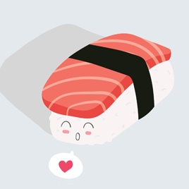
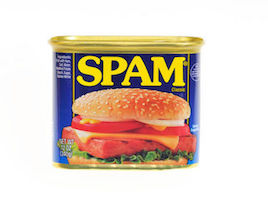
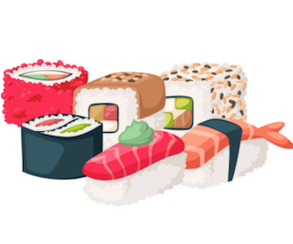
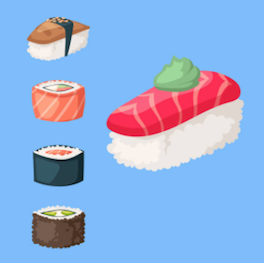
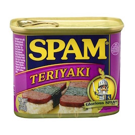
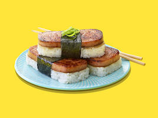

Gallery






Recipe
★★★★★
Ingredients
- 2 slices spam - sliced 3/8" thick
- 3 ounces cooked seasoned white rice
- 1tsp furikaki seasoning
- 1 whole sheet nori
Directions
- In large skillet, cook spam until lightly browned and crisp.
- Place rice into musubi press or line inside of empty spam can with plastic wrap and place rice in can. Press rice down firmly.
- Sprinkle with seasoned furikake and toasted sesame seeds, if desired.
- Place spam on rice in press or in can. Press down firmly.
- Remove SPAM® and rice from musubi press or can.
- On work surface, cut nori to desired width.
- Lay nori shiny-side-down; top with pressed spam and rice. Wrap nori fully around. Serve immediately.
Fun Spam Facts
| Did You Know: |
|---|
| There are 12.8 cas of spam product eaten every second. |
| There are 15 different varieties of spam products |
| Over 8 billion cans of spam have been sold. |
| Big Ben is 1,163 spam cans tall. |
| The canjo is a banjo made using a spam can. |
| Hawaii eats seven million cans of spam per year. |
| In Southeast Asia, spam is given as a luxury gift. |
| It would take 415,469,599 spam cans to circle the earth. |